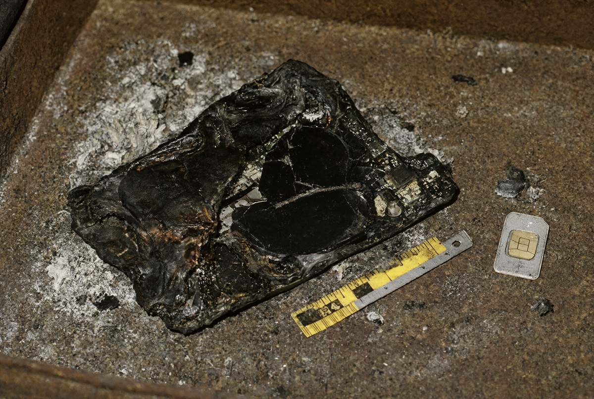

Я, старший слідчий в ОВС СУ ГУНП в Івано-Франківській області майор поліції Волков Д.С., у кримінальному провадженні № 12026090010002417, за участю слідчого СУ капітана поліції Гриценка О.В., спеціаліста-криміналіста Гнатишина Р.В., працівників ВП № 2 та КОРД, понятих Мацьків Г.Д. і Кіцелюка В.Й., у присутності директорки фонду Бабій Г.М., засновника фонду Бабія Я.В. та його захисника, на підставі ухвали слідчого судді Івано-Франківського міського суду від 20.10.2026 (справа № 344/17925/26) провів обшук території, будівель і приміщень БФ «Родина» за адресою: с. Підгір'я, вул. Лісова, 12.
На момент обшуку на території перебувало 23 чоловіки віком 19–44 роки. Усі на питання про самопочуття відповідали: «Мені тут добре». Після оголошення, що паспорти буде повернено власникам, четверо попросилися поговорити зі слідчим окремо.
У печі лазні, у зольнику під колосниками, серед попелу виявлено оплавлені рештки смартфона: деформована алюмінієва рамка корпусу, фрагменти плати, спечене скло, лоток SIM-карти (металевий, з гравіюванням). На внутрішньому боці рамки та на лотку SIM збереглося лазерне маркування; IMEI 35 884410 271903 6 збігається з телефоном Палійчука В.І. — з IMEI пристрою, що за даними оператора обслуговував номер +380 67 512 40 03 до 15.10.2026 23:47, і з коробкою від телефона, наданою Палійчук І.О. Рештки вилучено разом із попелом (пакет № 21).

У кабінеті — металевий сейф. Ключ від сейфа Бабій Я.В. видати відмовився; Бабій Г.М. дістала ключ із шухляди кухонного столу («він там завжди лежить, під серветками») і передала слідчому. У сейфі виявлено:
Примітка слідчого: за адресами з аркуша направлено доручення дільничним офіцерам громад. Попередньо встановлено проживання ще одного «онука» (Онук К., м. Калуш) у самотньої пенсіонерки 1941 р.н.
У підвалі адміністративного будинку — приміщення 3 × 4 м з металевими дверима, засувом ззовні, двома матрацами й відром. На стіні — подряпані дати й імена. Бабій Я.В. пояснив, що це «кімната для молитви наодинці». Приміщення сфотографовано (фото 2–5, у додатку). У гаражі — автомобіль Škoda Octavia AT 7713 ВК (чорний); у бардачку — страховий поліс на ім'я Сенчука І.П.; автомобіль вилучено для огляду.
Бабій Я.В. від пояснень відмовився з посиланням на ст. 63 Конституції України. Бабій Г.М. заявила: «Я підписувала, що він казав. Я не знала, що там. Хлопці, простіть». Від захисника надійшло зауваження про «надмірну кількість працівників поліції на території релігійної громади»; зауваження внесено до протоколу.